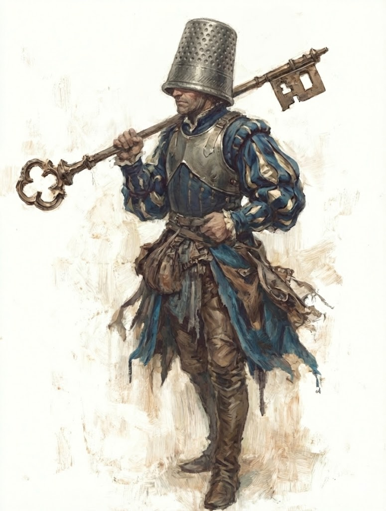

Taran is a Boggart — one of the household's folk — serving as a Soldier of the First Class, posted to the Hearth. He carries a Halberd Key and a grappling hook and line, speaks Housian, and has no coins to his name.
His background includes rescuing others from rats, and his prologue memory — the first truth he chose to carry — is: Being scared is part of being brave.
| Field | Entry |
|---|---|
| Folk | Boggart |
| Homeland | The Hearth |
| Profession | Soldier |
| Vocation | First Class |
| Language | Housian |
| Contract | Dear to the Hearth (Hereditary) |
| Coins | 0 |
Taran's Decorum is currently 3 — Decent. His Juggernaut concession (see Contract) costs one Decorum level on use, so invocation would drop him to 2.
Two aces are currently held: the Club and the Diamond. The Heart and Spade are not in hand.
All conditions clear: not Embarrassed, Confused, Hurt, Frightened, Tired, Sick, Poisoned, or Broken.
Taran's strongest field is War, where every skill sits at 3. His Street field has two skills at 3 (Caution and Shoot) despite a field rank of 1. Society and Academia are more moderate, with Grace the standout in Society at 3.
Taran's contract is Dear to the Hearth, a Hereditary contract — terms inherited with his folk rather than individually negotiated.
Boggarts can go Juggernaut, drastically increasing their size, strength, and resistance. When doing so, they can grow up to twice their size, with muscles as hard as numismatic metal. Going Juggernaut is Helpful for all War rolls, but Hindering for any other action. In combat, the Juggernaut Boggart always gains +1 to all Action and Reaction Rolls, and ignores all Conditions. The Boggart automatically loses one level of Decorum when going Juggernaut, as clothing and armour are torn through. They remain Juggernaut for a maximum of 5 turns, or may end it voluntarily. When Juggernaut ends, the Boggart receives the Tired Condition if they do not already have it.
Boggarts are always bound to keep their word of honor. If they fail to honor a promise they uttered explicitly, they inevitably fall victim to Terrible, Terrible Things.
War skills all at 3, plus Master at Arms (free re-roll on weapon and combat rolls), Braveheart (+1 to courage and will), and Endure Pain (clear a Condition) form a cohesive combat build. The Juggernaut concession further amplifies War rolls once per session, at the cost of Decorum and the Tired condition.
Wealth: unspecified. Coins: 0.
Being scared is part of being brave. — Taran's Prologue Memory
This is the one memory Taran carries from before play begins. It speaks directly to his build — a soldier with Will 3, Braveheart, and a background of rescuing others from rats. Courage here is not the absence of fear but action taken in its presence.
The chapter memories beyond the Prologue are all blank. Taran is ready to play.